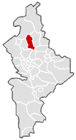
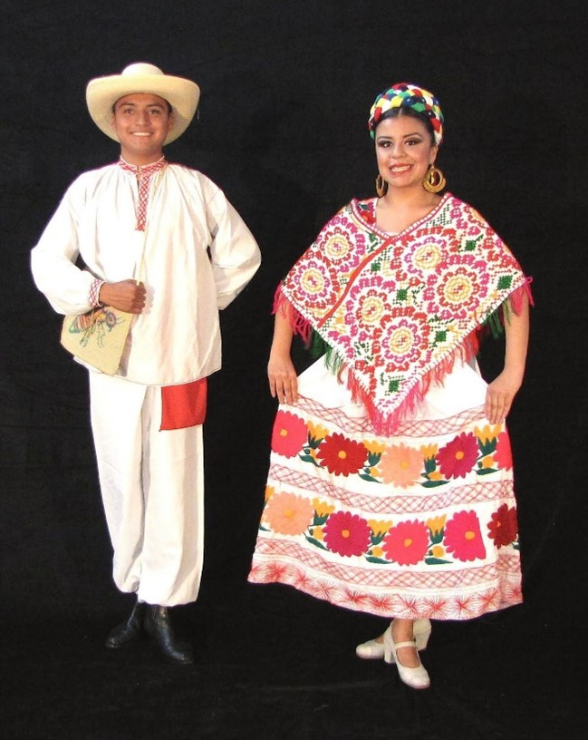
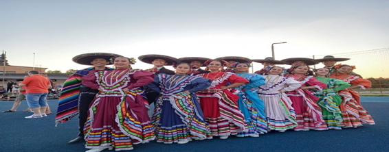
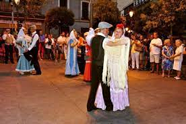
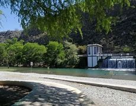
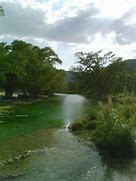

INFORMACION GENARAL SOBRE EL MUNICIPIO
 Sabinas Hidalgo es una localidad y un municipio del estado de Nuevo León, México; se ubica al norte del estado, limita al norte con Lampazos; al sur con Salinas Victoria e Higueras; al este con Vallecillo y Agualeguas; al oeste con Lampazos, Villaldama y al Suroeste con Salinas Victoria. El Municipio Sabinas Hidalgo se localiza en el estado de Nuevo León México Población en Sabinas HidalgoLa población total del Municipio Sabinas Hidalgo es de 32040 personas, de cuales 15876 son masculinos y 16164 femeninas. Edades de la población
La población de se Sabinas Hidalgo divide en 11276 menores de edad y 20764 adultos, de cuales 3697 tienen más de 60 años. Población indígena en Sabinas Hidalgo
141 personas en Sabinas Hidalgo viven en hogares indígenas. Un idioma indígeno hablan de los habitantes de más de 5 años de edad 59 personas. El número de los que solo hablan un idioma indígena es 0, los de cuales hablan también mexicano es 57.
Estructura social
Derecho a atención médica por el seguro social, tienen 18717 habitantes de Sabinas Hidalgo.Estructura económica
En Sabinas Hidalgo hay un total de 9079 hogares. De estos 8875 viviendas, 66 tienen piso de tierra y unos 447 consisten de una habitación solo. 8662 de todas las viviendas tienen instalaciones sanitarias, 8254 son conectadas al servicio público, 8663 tienen acceso a la luz eléctrica. La estructura económica permite a 1472 viviendas tener una computadora, a 7841 tener una lavadora y 8646 tienen televisión.Educación escolar en Sabinas Hidalgo
Aparte de que hay 781 analfabetos de 15 y más añnos, 223 de los jóvenes entre 6 y 14 años no asisten a la escuela. De la población a partir de los 15 años 961 no tienen ninguna escolaridad, 8832 tienen una escolaridad incompleta. 5456 tienen una escolaridad básica y 7162 cuentan con una educación post-báasica. Un total de 1712 de la generación de jóvenes entre 15 y 24 años de edad han asistido a la escuela, la mediana escolaridad entre la población es de 8 años.Vestimenta
| Las mujeres es la china poblana y de hombre pues la chamarra tamulipeca y sombrero de palmito |  |
Danzas
|  |
Polca Danza que hace rememorar el esplendor y la opulencia de la antigua Polonia– se popularizó en el territorio nacional y en Europa en la época napoleónica, gracias a los oficiales de las legiones polacas, adquiriendo especial fama la Mazurca de Dąbrowski, el himno nacional de Polonia |
|
Chotis El chotis es una música y baile con origen en Bohemia. Su nombre deriva del término alemán Schottisch («escocés»), una danza social centroeuropea a la que en Viena se quiso atribuir origen en un baile escocés. |  |
Literatura
|
JOSÉ LORENZO ENCINAS GARZA Nacimiento: 1956 Sabinas Hidalgo, Nuevo León |
Tradiciones y Cultura
Las fiestas de Navidad y Año Nuevo, son de gran arraigo y con mucho las más importantes y principales a lo largo del año. Miles de personas acuden desde los Estados Unidos y otros lugares a visitar la ciudad y reunirse con sus familias. Hay todo tipo de eventos, carreras de autos, bailes, y celebraciones de carácter social y religioso. Sabinas Hidalgo, N. L. ofrece parajes naturales de gran belleza como lo son : Parque Ojo de Agua, Parque la Turbina, Parque Charco del Lobo, Parque La Coleada, entre otros. Parque La Turbina: A 4 km tiene una cascada artificial al pie del Cerro de La Cuchilla, cuenta con juegos acuáticos, palapas, asadores, restaurantes, canchas y juegos infantiles.|  Parque La Turbina | A 4 km tiene una cascada artificial al pie del Cerro de La Cuchilla, cuenta con juegos acuáticos, palapas, asadores, restaurantes, canchas y juegos infantiles. |
| A 3 km lugar de convivencia familiar con palapas y asadores junto al Río Sabinas, cuenta con juegos infantiles y estacionamiento. |  Parque Charco del Lobo |
| Parque La Coleada: Instalaciones junto a la Presa "Mariano Escobedo" de la comunidad de Sombreretillo, con palapas, juegos infantiles, botadero de lanchas. | |
 | Sierra de Picachos: Área Natural Protegida que cuenta con 27 especies de mamíferos y 139 especies de aves, 51 de reptiles y 12 de anfibios. |
El día 25 de julio se celebra la "Fundación de Sabinas Hidalgo"
Cada año se realiza en el municipio en el mes de julio la Feria de la Fundación, para conmemorar un aniversario más de existencia de Sabinas Hidalgo, en ella se realizan diversos eventos culturales, como han sido presentación de libros alusivos al municipio, exposiciones de artes plásticas, muestras de danzas folclóricas de diferentes partes de la región y el país, entre otras. Desde 2010 se lleva cabo en el mes de abril el evento MOTO ROCK, organizado por la Secretaría de Turismo municipal, que atrae a gran número de visitantes. En su edición 2014 contó con más de 1,000 motociclistas, de clubes de muchas ciudades del Noreste, Texas y la Cd. de México, entre otras. El 25 de febrero de 2009 se constituyó el Consejo de la Historia y Cultura Sabinas Hidalgo, organismo que tiene como finalidad promover y difundir la historia, tradiciones y cultura sabinenses.
Segundo sábado de Arte: evento que tiene lugar en al plaza principal de esta ciudad, y que se organiza el segundo sábado de cada mes, donde artistas de la plástica, las letras, la música y otras expresiones se dan cita en un marco familiar y entusiasta.
Año con año se llevan a cabo bailes populares los días 24, 27, 28 y 31 de diciembre.
El machacado, el cabrito, el pan de huevo y los turcos; dulces elaborados a base de leche, nuez y leche quemada.